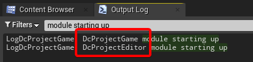
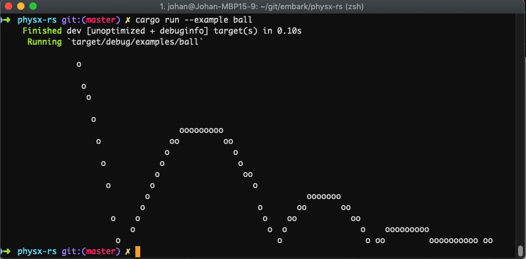

One major challenge we're facing when maintaining DataConfig is that we'll need to support it across multiple Unreal Engine versions. Up until now, DataConfig is working from UE4.25-4.27 and UE5 Preview 2. We need some strategy to quickly build and test against these growing number of versions.
Fortunately, we found that UE has excellent "headless" support: you can do tons of stuff with the engine from the command line, without opening an editor. It speeds up our workflow a lot and ultimately makes targetting multiple UE versions viable.
In the following sections we'll demonstrate that:
We've set up a sample project named DcProject that you can download and play with. It's a minimal C++ Unreal Engine project that can be built and launched. The directory hierarchy is pretty simple:
DcProject.uproject
README.md
Source
|-- DcProject.Target.cs
|-- DcProjectEditor
| |-- DcProjectEditor.Build.cs
| |-- Private
| | `-- DcProjectEditor.cpp
| `-- Public
| `-- DcProjectEditor.h
|-- DcProjectEditor.Target.cs
`-- DcProjectGame
|-- DcProjectGame.Build.cs
|-- Private
| `-- DcProjectGame.cpp
`-- Public
`-- DcProjectGame.h
Open up your terminal and cd into DcProject root. Suppose you have a UE copy at C:\UnrealEngine, you can build the project with the command line below:
C:\UnrealEngine\Engine\Build\BatchFiles\RunUBT DcProjectEditor Win64 Development "%CD%/DcProject.uproject" -Rocket -NoHotReload
When compilation is done launch the project from command line:
C:\UnrealEngine\Engine\Binaries\Win64\UE4Editor "%CD%/DcProject.uproject"
When the editor shows up look for "module starting up" lines in the log. These are printed from the project modules:

Some caveats:
The project has one runtime module DcProjectGame which contains game code.
DcProjectEditor is the editor-only module. This resembles the setup of a typical UE game project.
There's no version associated with "DcProject.uproject" file.
This means you can compile and launch the project across multiple Unreal Engine installations. As long as you get the UnrealBuildTool and editor binary path correct it's just gonna work. If you build the same project using version A and then version B, the build tool would correctly detect that and rewrite all the binaries.
Be careful when dealing with source builds.
If you're using a source build, pay extra attention to the Win64 Development flags in the command line. It should be identical to your source build or this command would start a new Unreal Engine build, which takes a lot of time and usually is not what you desire.
DcProject's minimal setup took inspiration from this awesome talk: Unreal Engine C++ Project Setup, From Scratch. I wish this guy do a video on every computer thing. Be sure to check it out.
Similar to DcProject we've also set up a minimal UE plugin DcPlugin:
DcPlugin.uplugin
Source
|-- DcPluginCore
| |-- DcPluginCore.Build.cs
| |-- Private
| | `-- DcFoo.cpp
| `-- Public
| `-- DcFoo.h
|-- DcPluginEditor
| |-- DcPluginEditor.Build.cs
| `-- Private
| `-- DcPluginEditorModule.cpp
|-- DcPluginHeadless
| |-- DcPluginHeadless.Build.cs
| |-- DcPluginHeadless.Target.cs
| `-- DcPluginHeadlessMain.cpp
`-- DcPluginRuntime
|-- DcPluginRuntime.Build.cs
`-- Private
`-- DcPluginRuntimeModule.cpp
It has 4 modules:
DcPluginCore: This is the core library module. We put a simple struct FFoo and a method HelloFoo inside FFoo.h/cpp, and it would be referenced in other modules.
One key thing to note is that we keep its dependencies minimal to only Core and CoreUObject, which is defined in DcPluginCore.Build.cs. This is crucial for our headless target to work.
DcPluginRuntime / DcPluginEditor: These are the conventional runtime and editor modules and implements the IModuleInterface. These also need to be registered in DcPlugin.uplugin where Type/LoadingPhase can be configured.
DcPluginHeadless: Under the plugin folder we have both Build.cs and Target.cs so that we can build this module as a standalone binary! We'll explain in detail below.
DcPlugin itself can be dropped into a UE project's Plugins/ folder and it should build and work just fine. But the headless target only works with a source build. Be sure you have a locally built Unreal Engine with full sources and continue on the steps below.
Open up a shell and cd into DcPlugin root. Suppose your UE source build is located at C:\UnrealEngine, run the command below to build headless.
C:\UnrealEngine\Engine\Build\BatchFiles\RunUBT -project="%CD%/DcPlugin.uplugin" DcPluginHeadless Win64 Debug
It would produce a binary named DcPluginHeadless-Win64-Debug.exe which you can run from the command line:
C:\DcPlugin>.\Binaries\Win64\DcPluginHeadless-Win64-Debug.exe
LogInit: Display: Loading text-based GConfig....
LogTemp: Display: Hello DcPluginHeadless
This doesn't look very exciting at first. But this workflow does bring up many benefits:
Compilation is magnitudes faster than building the whole engine.
On my box doing a clean DcPluginHeadless build takes under 1 minute, while building the editor with all plugins takes multiple hours.
This is especially useful when you want to test something against a fresh copy UnrealEngine code. The common steps are you do GenerateProjectFiles.bat
then do the hours-long compilation for UE4Editor binaries, then test it with your plugin. Now with the headless target you can build it right after GenerateProjectFiles.bat
, in which gets the UnrealBuildTool ready.
You can now use Debug configuration.
We usually use Development configuration to build the editor. The Debug build makes it painfully slow to use.
With the headless target Debug is okay as it doesn't make that much difference on a simple console application.
There are also downsides here: you can not use most engine and editor features. To be more specific you can't reference Engine and UnrealEd modules in the headless target. These modules are the key modules to the "Engine" part of the code. If your plugin depends on the gameplay framework or editor system you can do very little thing
in the headless target.
The built-in Chaos physics module features a headless program target to host its unit tests. You can build it with the commands below:
C:\UnrealEngine\Engine\Build\BatchFiles\RunUBT HeadlessChaos Win64 Development
Run the resulting HeadlessChaos binary to start the googletest runner:
.\Binaries\Win64\NotForLicensees\HeadlessChaos.exe
Note that this also works with source build only.
We did most of DataConfig development using Visual Studio on Windows. At one point we decided to try Linux build and we're pretty confident that it should build just fine with clang. Turns out we can't be more wrong on this. Now I can say with confidence that a codebase that's only built and tested with MSVC is guaranteed not to work with clang/gcc on the first try, no matter how careful you are. There're so many subtle little differences that would surface when you actually build it with another compiler. The good news is that UE build system makes it trivia to cross-compile and target WSL for testing.
UE officially supports cross compiling and distributes toolchains on its website. Download and install the toolchain according to your UE version here.
Then remember to restart your terminal to let new environment var kick in, namely LINUX_MULTIARCH_ROOT which points to the installation path.
Then invoke the commands below at DcPlugin root:
C:\UnrealEngine\Engine\Build\BatchFiles\RunUBT -project="%CD%/DcPlugin.uplugin" DcPluginHeadless Linux Debug
Note that Win64 is changed to Linux and the console output should hint that it's using clang. When it finishes you should've gotten a Linux binary at
.\Binaries\Linux\DcPluginHeadless-Linux-Debug.
Now what's cooler is that you can execute the binary under WSL! Setting up WSL is a complex process that involves checking your Windows 10 version and downloading a ton of stuff. The official guide here is the best resource I knew. I've setup WSL2 with a recent Ubuntu LTS on my box:
C:\DcPlugin>wsl lsb_release -ir
Distributor ID: Ubuntu
Release: 20.04
After you get WSL working, running the headless target is trivia:
wsl ./Binaries/Linux/DcPluginHeadless-Linux-Debug
Note that you have to use / instead of \ in the path or it won't work in Linux. I personally find it pretty neat that this is even possible.
Years ago we have to resort to heavier solutions like VirtualBox. Now it runs just like another command line utility.
The downside is that seems WSL taxes quite a lot on performance. I also failed to run the editor under WSL, at least with UE 4.27.
In DataConfig we have a more complex setup:
We write tests confirming to UE's Automation Testing framework. Tests are wrapped inside the DC_TEST() macro and core tests all reside in DataConfigTests module.
DataConfigTests module is loaded inside DataConfig.uplugin as a editor module. In this way, the tests would be auto-discovered and shown in the editor "Automation" tab.
DataConfigHeadless module is our headless target. It references DataConfigTests in module rules so that the tests are built into the binary. We've implemented a simple test runner to do filtering and result reporting. When running from the command line it looks like this:
C:\DataConfig>.\Binaries\Win64\DataConfigHeadless-Win64-Debug.exe
LogDataConfigCore: Display: DataConfigCore Version: 1.2.1, 10201
LogDataConfigCore: Display: Filters: DataConfig.
- OK | DataConfig.Extra.PathAccess.PropertyPathHelpers
...
- OK | DataConfig.Core.Serialize.InlineSubObject
Run: 95, Success: 95, Fail: 0
DataConfig is designed in a way that the DataConfigCore depends only on Core/CoreUObject so it can be used in headless target.
We put example code that takes extra dependencies in DataConfigExtra and DataConfigEditorExtra. Each on its own can also contain DC_TESTs and would be auto-discovered by the editor.
See doc on DataConfig automation here.
If you do non-trivial C++ development with Unreal Engine, We highly recommend you try setting up a headless program targets for your project. For me iterating on a simple command line binary feels so pleasant that it results in higher productivity.
Also we're noticing a trend in gamedev that is the comeback of unit testing. UE headless targets are a perfect place to store them. Testing game code can lead to creative solutions.
